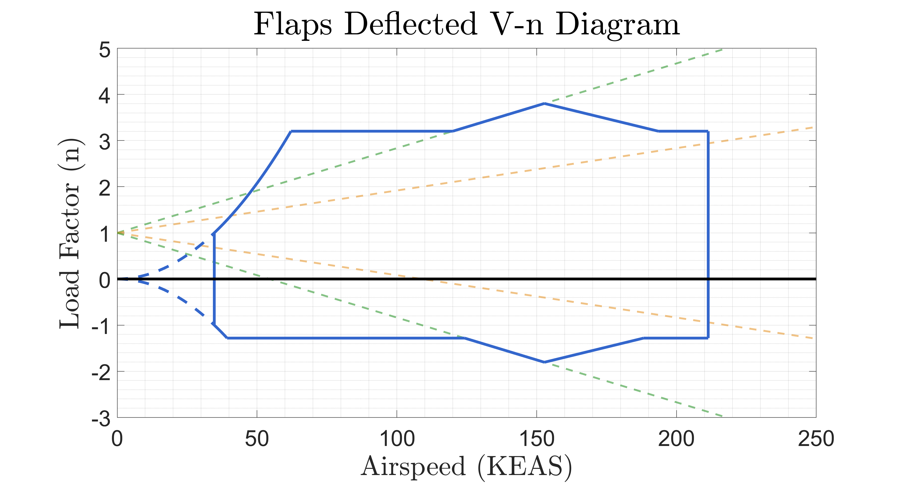
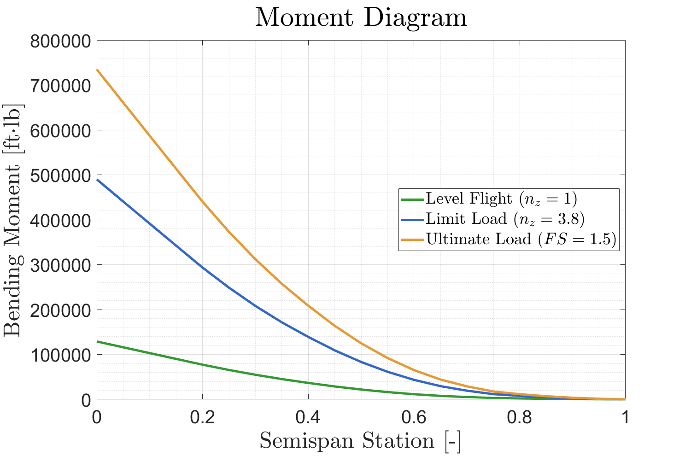
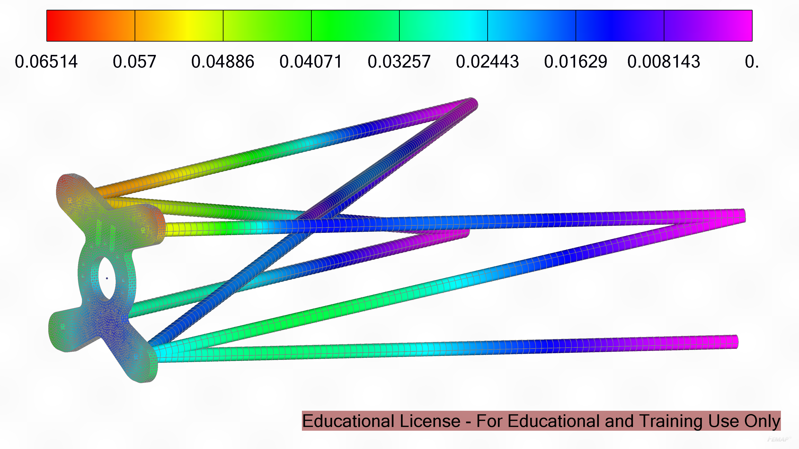
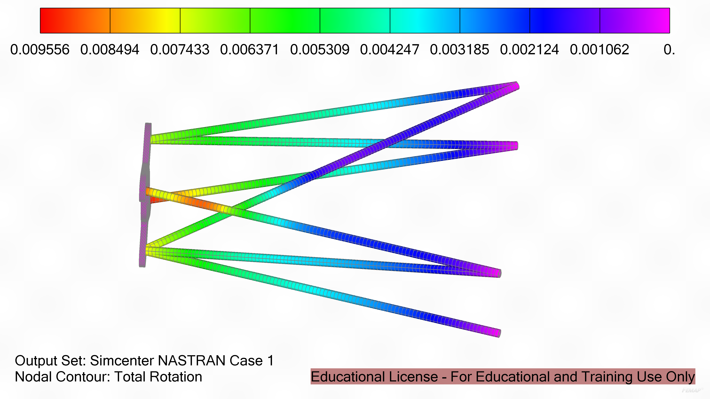

Detailed Design of Hybrid-Electric Military Utility Aircraft Wingbox

My Roles:
- Modelling/CAD Lead
- Wingbox Sizing
- Motor Mount Design and Analysis
Background:
For the second part of my senior capstone, I was on a team performing the detailed design of an aircrafts wingbox.
We chose to design the wingbox of the aircraft that we designed in preliminary design the previous semester.
Design Requirements:
- A fatigue life greater than 40,000 flight hours
- An inspection interval greater than 1,000 flight hours
Loads
The first thing I did was generate a V-n diagram for the aircraft.
This was done for two different regimes: A clean configuration in cruise, and flaps deflected configuration in takeoff/landing.
From these two graphs, a maximum positive load factor of 3.8g was identified and a maximum negative load factor of -1.8g was identified.
These are both during the flaps down configuration.
 Flaps Down Configuration V-n Diagram
 Bending Moment Diagram
Initial Wingbox Sizing
The initial sizing of the wingbox assumed an ideal wingbox configuration as shown below.
Initially, a three-spar design was selected to handle the large bending moment at the root.
However, it was determined that this added unnecessary weight, complexity, and effected the fuel tank integration.
Thus, the design shifted to a two-spar design with stringers lining the top and bottom of the wingbox.
 Initial Wingbox Design
Initial Wingbox Design
 Final Wingbox Design
Final Wingbox Design
Spar Design
The spar cap design initially consisted of two I-beam configurations.
However, this design was changed to be two angled spar caps, with the angles pointing inwards.
I chose to change this because this caused interference on the trailing edge with the flap and control surface integration.
Since the front spar was around the location of maximum camber, the forward-facing spar cap had a lot of curvature, which added unnecessary complexity to manufacturing and integration.
Thus, a final spar cap design was selected.
 Forward Spar
Forward Spar
 Aft Spar
Aft Spar
Stringer Design
For the stringers, we initially chose to use standard z-stringers.
However, I changed these to J-stringers as this allowed for two rows of fasteners to be installed onto each stringer, improving redundancy and connection to the wing planform.
 J-Stringer Design
J-Stringer Design
Fuel Tank Design
The fuel tank was designed to be integral, meaning that it was a structurally significant part of the wing.
The reason I did this was to provide as much reinforcement in the root of the wing.
Since this was a hybrid aircraft, the moment at the root was immense as there is not much fuel distributed throughout the wing to counteract it and the electric motors mounted onto the wing do not weigh a lot.
As such, having the integral fuel tank would serve to increase the amount of structure at the root to resist the bending.
Additionally, the ribs go through the fuel tank, which helps to eliminate sloshing of the fuel during in flight.
Motor Mount Design
The motor mount was a pivotal part of this aircraft.
Electric motors carry high torques and create a large loading on the mount.
The design I chose to use was a truss structure mounted on the middle of the wing into the spar.
There is a bracket that connects to the front of the truss, serving as a mounting point for the motor, and there is a plate on the bottom of the truss, which helps to alleviate stress concentrations on the front spar web.
The initial design is shown below.
 Initial Motor Mount Design
Initial Motor Mount Design
This design was taken and iteratively designed using NX Femap to identify the critical stresses in the truss as well as the plate that mounts the motor to the truss. I established design criteria for the mount to ensure safety and longevity.
- <one degree of rotational deformation
- <0.5 in degree of of translational deformation
- <half of the yield stress of the material
 Final Motor Mount Design
Final Motor Mount Design
 Translational Deformation (inches)
 Rotational Deformation (radians)
 Von Mises Stress in Bracket (PSI)
Von Mises Stress in Bracket (PSI)
 Stress in Truss (PSI)
Stress in Truss (PSI)
DADTA
Lastly, durability and damage tolerance analysis was performed of high stress areas. The team established 5 key locations:
- Front Lug Pin
- Front Lug and Bracket Joint
- Front Bracket Spar Hole
- Front Spar Cap Hole
- Rear Luck and Bracket Joint
DADTA was performed and all components were found to be over 40,000 flight hours for an economic life and over 3,500 flight hours for an inspection interval.